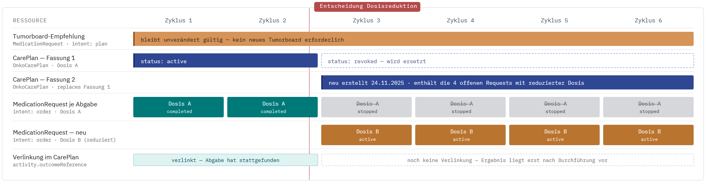
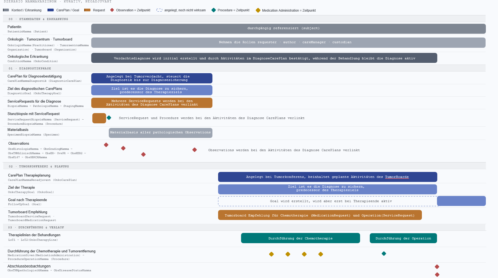

http://www.orpha.net
https://bih-cei.de/fhir/therapieziele-onkologie/CodeSystem/enlist-countable
https://bih-cei.de/fhir/therapieziele-onkologie/CodeSystem/enlist-lot-setting
https://bih-cei.de/fhir/therapieziele-onkologie/CodeSystem/onko-therapy-goal-type
https://www.medizininformatik-initiative.de/fhir/ext/modul-onko/CodeSystem/mii-cs-onko-grading
https://www.medizininformatik-initiative.de/fhir/ext/modul-onko/CodeSystem/mii-cs-onko-mamma-her2neu-status-leitlinie
https://www.medizininformatik-initiative.de/fhir/ext/modul-onko/CodeSystem/mii-cs-onko-mamma-her2neu-status-obds
https://www.medizininformatik-initiative.de/fhir/ext/modul-onko/CodeSystem/mii-cs-onko-primaertumor-diagnosesicherung
urn:oid:2.16.840.1.113883.6.43.1
This fragment is not visible to the reader
This publication includes IP covered under the following statements.
| Type | Reference | Content |
|---|---|---|
| web | browser.ihtsdotools.org | Mapping from Onkologische Therapieziel-Art (VS) to All Codes SCT ValueSet |
| web | snomed.info | 373808002 |
| web | snomed.info | 363676003 |
| web | snomed.info | 373847000 |
| web | snomed.info | 373846009 |
| web | snomed.info | 399707004 |
| web | snomed.info | 385786002 |
| web | snomed.info | 315601005 |
| web | snomed.info | 385798007 |
| web | snomed.info | 76334006 |
| web | snomed.info | 169413002 |
| web | snomed.info | 450827009 |
| web | snomed.info | 816151001 |
| web | snomed.info | 1254741007 |
| web | snomed.info | 1345242003 |
| web | www.bihealth.org |
IG © 2026+ Berlin Institute of Health at Charité (BIH)
.
Package de.bih-cei.therapieziele-onkologie#1.0.0-ballot basiert auf FHIR 4.0.1
.
Erstellt
2026-07-31
Links: Inhaltsverzeichnis | QA-Bericht |
| web | www.medizininformatik-initiative.de | Onkologische Tumorerkrankung auf Basis des MII Kerndatensatz-Moduls Onkologie ( MII PR Onkologie Diagnose Primärtumor , Version 2026.0.3). |
| web | fhir.kbv.de |
Optional Extensions Element URL: http://fhir.de/StructureDefinition/seitenlokalisation Binding: https://fhir.kbv.de/ValueSet/KBV_VS_SFHIR_ICD_SEITENLOKALISATION ( required ) |
| web | fhir.kbv.de |
Optional Extensions Element URL: http://fhir.de/StructureDefinition/icd-10-gm-diagnosesicherheit Binding: https://fhir.kbv.de/ValueSet/KBV_VS_SFHIR_ICD_DIAGNOSESICHERHEIT ( required ) |
| web | browser.ihtsdotools.org | Zielarten → SNOMED CT (Zielzustände) |
| web | snomed.info | ~ 371001000 (Zielzustand exakt abgebildet (Finding). Alternative Zustandscodes für Zwischenziele: 103338009 |In full remission|, 103337004 |In partial remission|.) |
| web | snomed.info | ? 445320007 (SNOMED kennt keinen Zielzustand 'verlängertes Leben'; annotiert ist die Messgröße (Observable). Verwandt: 445397003 |Duration of recurrence-free survival|.) |
| web | snomed.info |
?
1149243003
(Finding aus dem Selbstmanagement-Kontext; nächstliegender Zustandscode.)
? 225353007 (Regime/Therapy — das Mittel, nicht der Zielzustand.) |
| web | snomed.info |
?
1149243003
(Finding aus dem Selbstmanagement-Kontext; nächstliegender Zustandscode.)
? 225353007 (Regime/Therapy — das Mittel, nicht der Zielzustand.) |
| web | snomed.info | ~ 1156447008 (Zielzustand als Finding. Messgröße dazu: 405152002 |Quality of life satisfaction (observable entity)| — Erfassung per PROM oder Interview, siehe Zielwerte-Seite.) |
| web | github.com |
Die Original-Fassung (Markdown-Master und docx) liegt im Repository unter
docs/L01-Analyse/
.
|
| web | github.com | mCODE GitHub Repository: github.com/HL7/fhir-mCODE-ig |
| web | doi.org | Quelle: Saini KS, Koopman M, Martins-Branco D et al. ESMO adaptation of Lines of Systemic Therapy (EnLiST): a consensus framework for standardising the designation of lines of therapy in solid tumours. Annals of Oncology 2026;37(5):608–623. DOI: 10.1016/j.annonc.2026.02.008 |
| web | doi.org | Saini KS, Koopman M, Martins-Branco D et al. ESMO adaptation of Lines of Systemic Therapy (EnLiST): a consensus framework for standardising the designation of lines of therapy in solid tumours. Annals of Oncology 2026;37(5):608–623. DOI: 10.1016/j.annonc.2026.02.008 |
| web | www.awmf.org | AWMF Regelwerk Leitlinien (Empfehlungsstärken, LoE): awmf.org/regelwerk |
| web | github.com | MII GitHub: github.com/medizininformatik-initiative/kerndatensatzmodul-onkologie |
| web | doi.org | Die systemische Therapielinie (Line of Therapy, LoT) folgt der internationalen Konsensnotation EnLiST ( Saini et al., Ann Oncol 2026 ) und wird in die Linien-Zählung aufgenommen. Eine Linie ist ein Abschnitt aktiver Systemtherapie mit definierter Intention, beendet durch ein klinisches Ereignis (Progress, Toxizität, Patientenwunsch, Studienende, geplanter Wechsel). |
| web | www.leitlinien.de | Bundesärztekammer (BÄK), Kassenärztliche Bundesvereinigung (KBV), AWMF. Nationale VersorgungsLeitlinie Asthma. Version 5, 23.08.2024 (gültig bis 14.08.2029), AWMF-Reg.-Nr. nvl-002. leitlinien.de/themen/asthma (abgerufen 29.07.2026). |
| web | ginasthma.org | Global Initiative for Asthma (GINA). Global Strategy for Asthma Management and Prevention – 2025 Update. GINA, Mai 2025. ginasthma.org/2025-gina-strategy-report (abgerufen 29.07.2026). |
| web | doi.org | Europäisch: Holguin F, Cardet JC, Chung KF, et al. Management of severe asthma: a European Respiratory Society/American Thoracic Society guideline. Eur Respir J 2020;55:1900588. DOI 10.1183/13993003.00588-2019 . — betrifft das schwere Asthma (Einteilung nach Entzündungstyp, Biologika). |
| web | www.dgvs.de | Deutsche Gesellschaft für Gastroenterologie, Verdauungs- und Stoffwechselkrankheiten (DGVS). S3-Leitlinie Diagnostik und Therapie des Morbus Crohn. Version 4.1, März 2024 (Living Guideline), AWMF-Reg.-Nr. 021-004. dgvs.de (abgerufen 29.07.2026). |
| web | register.awmf.org | DGVS. S3-Leitlinie Colitis ulcerosa. Version 7.0, November 2025, AWMF-Reg.-Nr. 021-009. register.awmf.org/de/leitlinien/detail/021-009 (abgerufen 29.07.2026). |
| web | doi.org | Europäisch: Torres J, Bonovas S, Doherty G, et al. (ECCO). ECCO Guidelines on Therapeutics in Crohn's Disease: Medical Treatment. J Crohns Colitis 2020;14(1):4–22. DOI 10.1093/ecco-jcc/jjz180 (2024 aktualisiert, JCC 18(10):1531). |
| web | doi.org | Europäisch: Raine T, Bonovas S, Burisch J, et al. (ECCO). ECCO Guidelines on Therapeutics in Ulcerative Colitis: Medical Treatment. J Crohns Colitis 2022;16(1):2–17. DOI 10.1093/ecco-jcc/jjab178 . |
| web | doi.org | Turner D, Ricciuto A, Lewis A, et al. STRIDE-II: An Update on the Selecting Therapeutic Targets in Inflammatory Bowel Disease (STRIDE) Initiative of the International Organization for the Study of IBD (IOIBD). Gastroenterology 2021;160(5):1570–1583. DOI 10.1053/j.gastro.2020.12.031 . — Staffel der Behandlungsziele („treat to target"). |
| web | www.g-ba.de | Übergeordnetes Ziel: laut DMP-Richtlinie die Erhöhung der Lebenserwartung , die Erhaltung/Verbesserung der Lebensqualität sowie die Vermeidung von Folgeschäden (an Augen, Nieren, Nerven, Herz und Gefäßen). Das ist – wie „kurativ/palliativ" (auf Heilung vs. auf Linderung ausgerichtet) in der Krebsmedizin – eine strategische Grundausrichtung ; heilbar im Sinne der Krebsmedizin ist der Diabetes nicht. |
| web | www.leitlinien.de | Bundesärztekammer (BÄK), Kassenärztliche Bundesvereinigung (KBV), AWMF. Nationale VersorgungsLeitlinie Typ-2-Diabetes. Version 3, 15.05.2023 (gültig bis 15.05.2028), AWMF-Reg.-Nr. nvl-001. leitlinien.de/themen/diabetes (abgerufen 29.07.2026). |
| web | www.ddg.info | Deutsche Diabetes Gesellschaft (DDG) (Hrsg.). Therapie des Typ-2-Diabetes. Praxisempfehlung, 2025 (Diabetologie und Stoffwechsel, Suppl.). ddg.info (PDF) |
| web | doi.org | Europäisch: Davies MJ, Aroda VR, Collins BS, et al. Management of Hyperglycaemia in Type 2 Diabetes, 2022. A Consensus Report by the American Diabetes Association (ADA) and the European Association for the Study of Diabetes (EASD). Diabetologia 2022;65:1925–1966. DOI 10.1007/s00125-022-05787-2 . |
| web | www.g-ba.de | Gemeinsamer Bundesausschuss (G-BA). DMP-Anforderungen-Richtlinie (DMP-A-RL) – Anlage Diabetes mellitus Typ 2 (Versorgungsziele des DMP). g-ba.de/richtlinien/83 (abgerufen 29.07.2026). |
| web | doi.org | Caumanns J, Timpel P (_fbeta GmbH). Patientenpfade im digitalen DMP Diabetes – Potenziale der Digitalisierung in die Versorgung von Menschen mit chronischen Erkrankungen bringen. Hrsg. Bertelsmann Stiftung, Gütersloh, August 2025. DOI 10.11586/2025055 . — Quelle für Versorgungsziele, PROMs (WHO-5, PAID, DDS) und die dDMP/ePA-Struktur. |
| web | doi.org | Europäisch (maßgeblich): Smolen JS, Edwards CJ, Konzett V, et al. EULAR recommendations for the management of rheumatoid arthritis with synthetic and biologic disease-modifying antirheumatic drugs: 2025 update. Ann Rheum Dis 2026;85:991–1009. DOI 10.1016/j.ard.2026.01.023 (Open Access). — Vorgänger: 2022 update , Ann Rheum Dis 2023;82(1):3–18, DOI 10.1136/ard-2022-223356 . |
| web | doi.org | Europäisch (maßgeblich): Smolen JS, Edwards CJ, Konzett V, et al. EULAR recommendations for the management of rheumatoid arthritis with synthetic and biologic disease-modifying antirheumatic drugs: 2025 update. Ann Rheum Dis 2026;85:991–1009. DOI 10.1016/j.ard.2026.01.023 (Open Access). — Vorgänger: 2022 update , Ann Rheum Dis 2023;82(1):3–18, DOI 10.1136/ard-2022-223356 . |
| web | doi.org | Fiehn C, Holle J, Iking-Konert C, et al. (DGRh). S2e-Leitlinie: Therapie der rheumatoiden Arthritis mit krankheitsmodifizierenden Medikamenten. AWMF-Reg.-Nr. 060-004, Juli 2018 (in Überarbeitung); Z Rheumatol 2018. DOI 10.1007/s00393-018-0481-y . |
| web | www.medizininformatik-initiative.de |
CarePlan → Erkrankung:
addresses
referenziert die OnkoCondition
(geerbt vom MII-Onkologie-Diagnoseprofil
, v2026.0.3).
|
| web | www.bihealth.org |
IG © 2026+ Berlin Institute of Health at Charité (BIH)
.
Package de.bih-cei.therapieziele-onkologie#1.0.0-ballot based on FHIR 4.0.1
.
Generated
2026-07-31
Links: Table of Contents | QA Report |
| web | doi.org | The umbrella term treatment line has two modality classes: the systemic line of therapy (LoT) follows the EnLiST consensus notation ( Saini et al., Ann Oncol 2026 ) and is counted ; the locoregional treatment line (surgery, radiotherapy, ablation) is not covered by EnLiST and not counted — a separate modality track. |
|
abweichung-dosisanpassung.png  |
|
abweichung-nebenwirkung.png
|
|
abweichung-progress.png
|
|
abweichung-sonstige-gruende.png
|
|
abweichung-substanzwechsel.png
|
|
abweichung-verstorben.png
|
|
profil-uebersicht.png
|
|
szenario-mamma-verlauf.png  |
|
tree-filter.png
|